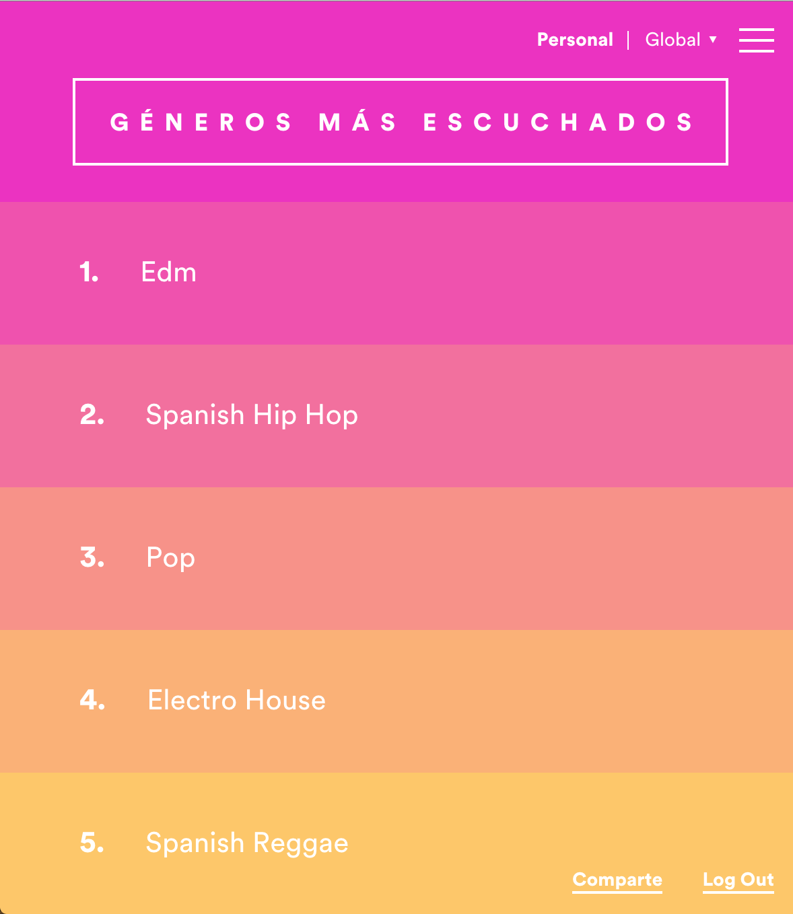
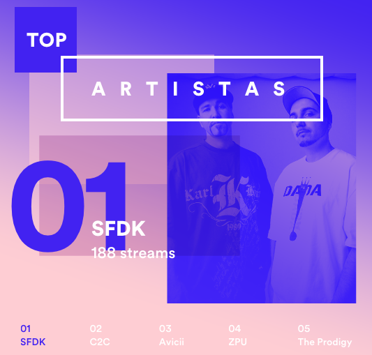

Antipublicidad
Como cada mes de Enero, Spotify resume mi año musical. Siempre me gusta echar un vistazo atrás y ver qué he escuchado durante el año pasado. No soy un gran amante de la música, aunque si es cierto que siempre está presente en distintos momentos de mi día a día.
Antipublicidad

EDM, Rap, Pop... son los géneros musicales que más he escuchado en 2015. Si os habéis preguntado como yo, qué es el género "EDM", cabe decir que no es un género músical y viene de mi lista Farming Code.
Salvando tendencias y redecillas musicales, respecto a los artistas he escuchado 209 diferentes entre los cuales destacan:

¿Algún rastro de reggaeton? ¿Algún rastro de cualquier género latino? Entonces, ¿por qué la gran mayoría los anuncios que Spotify me muestra son de listas, discos y artistas de Reggaeton? Tienen todos mis gustos musicales y son capaces de resumir mi año musical, pero no son capaces de encajar un anuncio que realmente me interese.
¿O quizás si? Quitando los anuncios de reggaeton, Spotify suele anunciarme su servico Premium haciendo especial hincapié en que mejorando mi cuenta, eliminaré los anuncios. Esto me ha llevado a pensar que o bien el 90% de sus anunciantes son distribuidoras de este tipo de música o que realmente su "antipublicidad" busca mi suscripción a su servicio Premium.